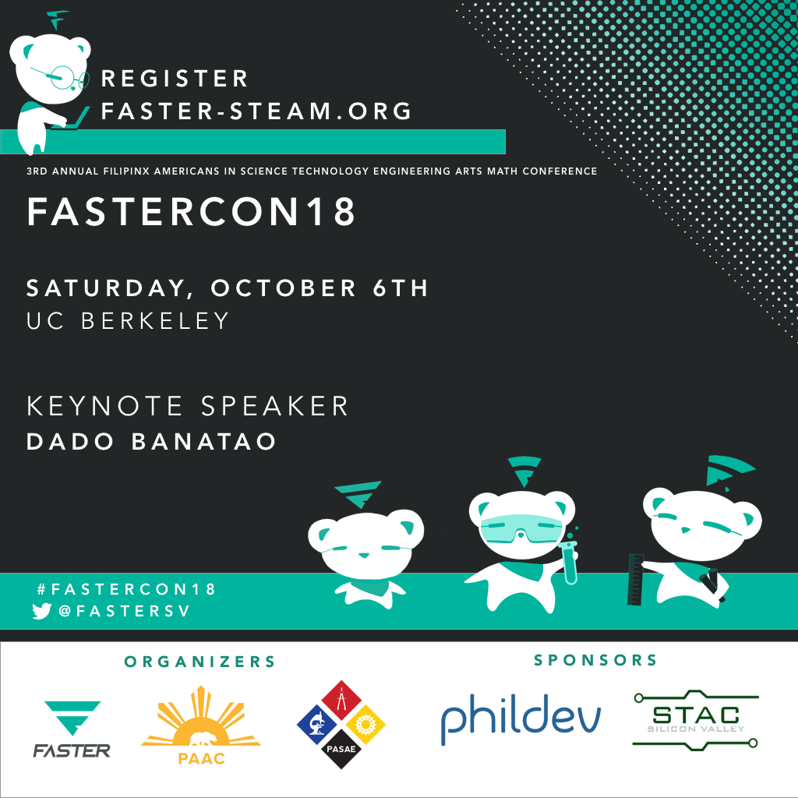

FASTERCON
FASTERCON is the annual conference hosted at UC Berkeley by FASTER. Every year, our conference highlights and celebrates the work of leading Filipino American technology professionals making an impact on the tech industry and seeks to strengthen our collective and tech professional network.
This year's keynote speaker is serial entrepreneur, venture capitalist, and tech pioneer, Dado Banatao.
We are excited to reach out to other prominent leaders in STEAM fields to participate in this year’s conference, which also includes professional breakouts for professional members of Employee Resource Groups (ERGs) and independent tech professionals, a new focus for technical women via Filipinas In Computing (under the Anita Borg Institute), and pursuing careers in tech startup entrepreneurship. Our attendees also include mentees were participate in our annual year-long mentorship program with students interested in pursuing tech careers.
2018 CONFERENCE AGENDA
- MORNING
-
8:00 AM - 9:00 AM
Registration & Mentorship Program Breakfast
-
9:00 AM - 9:30 AM
Opening Remarks
Romeo Marquez
The Filipino Channel University (TFCU)
UCLA ℅
EmceeThe Honerable Raquel R. Solano
San Francisco Philippine Deputy Consul GeneralErin Jerri Malonzo Pangilinan
Cal ℅ ‘08/09 L&S, USF Deep Learning Fellow ‘17-18
FASTER Founder, Board of Directors, President
O’Reilly Media, Co-Editor and Contributor, Creating Augmented + Virtual Realities
Oculus (A Facebook Company) Launch Pad ‘18 FellowCharity Nicolas
Cal ℅
FASTER Board of Directors
Cal Pilipino American Alumni Chapter PAAC President
Founder TechInColor High School Outreach Program -
9:30 AM - 10:30 AM
Keynote Speaker + Fireside Chat - Dado Banatao
Dado Banatao
Tallwood Ventures, PhilDev Foundation, Tech Entrepreneur, Investor, PhilanthropistModerator: Rajiv Ayyangar
Banatao Scholar (Princeton) CEO
Cryptagon -
10:45 AM - 11:30 AM
Engineering Panel
Moderator: Nathan Murthy
Software Engineer
Tesla
Cal alumnus ℅ 2010Liezl Puzon
Stanford PASU alumnus
Facebook Applied Machine Learning
Software Engineer - Lunch
-
12:20 PM - 1:05 PM
Skills-based Workshop
-
1:10 PM - 1:55 PM
Careers in Tech - Workshop Session
Blockchain
Coinbase StaffRajiv Ayyangar
Cryptagon.io
Founder/CEO -
2:00 PM - 2:45 PM
Careers in Tech - Workshop Session#2
Product Management/ Business Development/ Marketing/ Sales
Raymond Delacruz
BizOps at StubHubTech and Social Impact
Mario Lugay
Innovation Director
Justice Funders (formerly Kapor Capital) -
2:55 PM - 3:40 PM
Identity Caucus Breakout
Option #1: Pinays In Tech - Filipinas In Computing - Technical Women WorkshopFacilitated by:
Meriam (Yami) Bautista
Anita Borg Institute - Filipinas in Computing Chair -
Option #2: FASTER PROS
Co-Facilitated by:
Kristian Kabuay
DevOps Manager, Gap, Head of Asian Americans at GapEvelyn Obamos
Founder, Filipinos at Pinterest, FASTER Board of Directors FASTER PROS Co-Chair, USF alumnus -
Option #3: FASTER - FRESH Entrepreneurship
Co-Facilitated by:
Christina Laskowski
President, STAC-SV, USF Lecturer, FASTER Adviser, USF alumnusEarl Martin Valencia
Charles Schwab, formerly Bridgewater, Founder IdeaSpace Philippines, FASTER Adviser, STAC-SV Board, Stanford alumnusKendrick Kho
Head of Data, HoneCap, Stanford alumnusMark Montalban
Founders Institute -
3:50 PM - 4:10 PM
Isang Bagsak - Closing + Photos
Corina Calanoc
FASTER Board
FASTERCON Young Alumni Organizing Committee ChairIsabella de Leon
UC Berkeley PASAE FASTERCON LiaisonKendal Asperec
UC Berkeley PASAE EVP